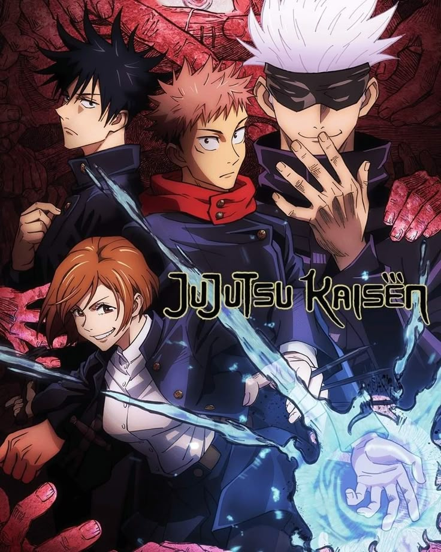

L'Attaque des Titans – Saison 4, Partie 1 (2020)

Genre : Action, Drame, Fantasy, Mystère
Studio : Studio MAPPA
Synopsis : La guerre entre Marley et l'île du Paradis atteint son paroxysme, révélant des vérités sur les Titans et l'histoire du monde.
Plus d'infos (optionnel)
Jujutsu Kaisen (2020)

Genre : Action, Surnaturel, Horreur, Shōnen, Comédie, Slice of Life
Studio : Studio MAPPA
Synopsis : Yuji Itadori, un lycéen aux capacités physiques exceptionnelles, rejoint une école d'exorcisme pour combattre des malédictions après avoir ingéré un objet maudit.
Plus d'infos (optionnel)